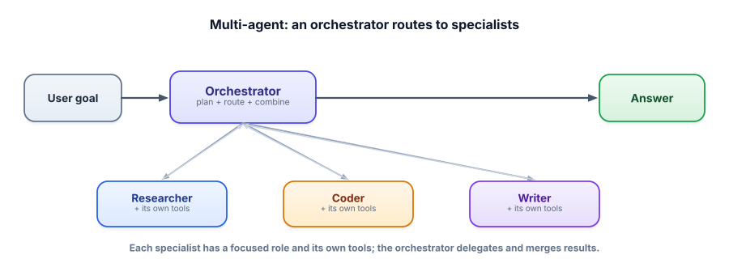

Multi-agent & orchestration
When one agent juggling a dozen tools and roles starts getting confused, the fix is often to split the work: focused specialist agents, coordinated by an orchestrator. Done right it’s cleaner and more reliable. Done reflexively it’s needless complexity — so we’ll be honest about when to reach for it.
Why split one agent into several
A single agent with 20 tools and instructions to be a researcher, coder, and editor all at once tends to make worse decisions — too many options, blurred focus, a bloated prompt. Splitting into specialist agents, each with a narrow role and just the tools it needs, mirrors how human teams work: a focused expert outperforms a generalist spread thin. An orchestrator then decides who does what and combines the results. The wins are modularity (build and test each agent separately), clarity (each prompt is simple), and reliability (a narrow agent makes fewer mistakes).

A multi-agent system uses several LLM agents that collaborate. An orchestrator (or supervisor) coordinates them — deciding which agent handles what and combining outputs. A specialist is an agent with a narrow role and toolset. A handoff is passing control (and context) from one agent to another. The coordination shape is the orchestration pattern.
A multi-agent system is like a group project at school: one kid researches, one draws, one writes, and a leader stitches it together. When it works it's faster; when it doesn't, two kids research the same thing, nobody draws the map, and the leader's instructions were so vague everyone guessed. The analogy breaks because kids can lean over and ask each other quick questions; agents only know what was written into the message they were handed.
The orchestration patterns
| Pattern | Shape | Use when |
|---|---|---|
| Router | Classify the request, send it to one specialist | Distinct request types (billing vs. technical) |
| Sequential pipeline | Agent A’s output feeds agent B feeds C | A clear assembly line (draft → edit → fact-check) |
| Supervisor / hierarchical | A manager agent delegates to and reviews workers | Open tasks needing planning + delegation |
| Parallel | Several agents work at once, results merged | Independent sub-tasks (research 3 competitors) |
A router in action
The simplest, most useful pattern: classify the request, hand it to the right specialist. Type something and watch it route.
Router
(Routing here is a simple keyword classifier; a real router uses the LLM to classify. Same shape.)
An LLM classifies the request, then a focused specialist (its own system prompt + tools) handles it.
import json, ollama
def ask(prompt, system=None, model="qwen2.5:7b"): # one chat call; returns the reply text
msgs = ([{"role": "system", "content": system}] if system else []) + [{"role": "user", "content": prompt}]
return ollama.chat(model=model, messages=msgs)["message"]["content"]
SPECIALISTS = {
"billing": "You are a billing specialist. Be precise about charges and refunds.",
"technical": "You are a technical support engineer. Diagnose and give clear steps.",
"sales": "You are a sales rep. Be helpful about plans and upgrades.",
}
def route(request):
prompt = f'Classify into one of [billing, technical, sales]. Return JSON {{"team":"..."}}.\nRequest: {request}'
out = ollama.chat(model="qwen2.5:7b",
messages=[{"role":"user","content":prompt}], format="json")["message"]["content"]
return json.loads(out)["team"]
def handle(request):
team = route(request) # orchestrator picks the specialist
return ask(request, system=SPECIALISTS[team]) # that specialist answers
print(handle("I was charged twice this month")) # routed to billingEach specialist prompt stays simple and testable. Adding a new team is one entry in the dictionary — that modularity is the practical payoff of multi-agent design.
Anthropic reports that its agents use about 4x the tokens of a chat, and its multi-agent research system about 15x; its multi-agent setup beat a single agent by 90.2% on its internal research eval (Anthropic, multi-agent research system). Assumptions for our workload: a chat answer uses 5,000 tokens, 90% input and 10% output, priced at claude-sonnet-5-5 ($2/M in, $10/M out, Claude models overview), so a blended $2.80 per million tokens.
- Per query. Chat: 5,000 tokens = $0.014. Single agent (4x): 20,000 = $0.056. Multi-agent (15x): 75,000 = $0.21.
- Per day at 50,000 queries. Chat $700; single agent $2,800; multi-agent $10,500.
- Coordination failures cost money too. Anthropic describes early versions spawning 50 subagents for simple queries, and subagents duplicating each other's searches because the lead's instructions were vague. Suppose 2 of 5 subagents duplicate work: about 40% of subagent spend is waste; if subagents are most of the $10,500, that is over $3,000 a day.
- Guards that pay for themselves. Scale effort to the query (a simple fact gets one agent, a broad comparison gets several), give each subagent an explicit objective, output format, tool list and boundaries, and cap subagents per query.
- The decision. If only 10% of queries are broad research, route those to multi-agent and the rest to a single agent: 5,000 x $0.21 + 45,000 x $0.056 = $1,050 + $2,520 = $3,570 a day, keeping the quality win where it exists.
Multi-agent systems are fashionable and often over-used. Every extra agent adds coordination overhead, more places to fail, more cost, and harder debugging. Start with one well-tooled agent. Reach for multiple agents only when roles are genuinely separable and a single agent is measurably struggling — not because diagrams with many boxes look impressive.
- Specialist agents with narrow roles + an orchestrator beat one agent doing everything — when roles are separable.
- Common patterns: router, sequential pipeline, supervisor/hierarchical, parallel.
- Benefits: modularity, simpler prompts, reliability, parallelism.
- Costs: coordination overhead, more failure points, harder debugging, higher cost.
- Single-agent first — add agents only when the task genuinely needs it.
You’re tempted to build five collaborating agents for a task a single agent with three tools already handles well in testing. What’s the right call?
When does a multi-agent setup help most?
An orchestrator sends three research subagents the instruction 'research the chip shortage'. Two return near-identical findings on the same year and nobody covers pricing. What is the root cause?
The MAST study of 1,600+ multi-agent traces groups failures into three categories. Which set is it?
1. Pick an orchestration pattern for each: (a) support inbox triaged to billing/tech/sales, (b) blog post drafted then edited then fact-checked, (c) research 4 competitors simultaneously.
2. Name two concrete costs a multi-agent system adds over a single agent.
3. When a sequential pipeline’s final output is wrong, how do you find which agent caused it?
▸ Show solutions & reasoning
1. (a) router — classify and send to one team; (b) sequential pipeline — draft → edit → fact-check, each stage’s output feeding the next; (c) parallel — four independent research agents run at once, results merged. Match the pattern to the task’s shape (one-of, assembly-line, or independent-fan-out).
2. (a) Coordination/communication overhead — agents must pass context cleanly, and handoffs lose or distort information; (b) more cost and latency — each agent is its own LLM call(s), so five agents can mean many times the tokens and time. (Also: harder debugging and more failure points.)
3. Inspect the intermediate outputs at each handoff — the same “read the trace” discipline as single agents, applied per stage. Because a pipeline is modular, you can check each agent’s input and output in isolation: if the editor received a good draft but produced a bad one, the editor is at fault. Logging every inter-agent message is what makes multi-agent systems debuggable; without it, you’re blind.
The hidden cost of multi-agent systems is communication. When agent A hands off to agent B, everything B needs must be packed into that message — and natural-language handoffs are lossy. Subtle context (a constraint mentioned early, a tentative decision) gets dropped, and errors compound down a chain: a small misunderstanding at stage one becomes a wrong deliverable at stage four. This is why naive “just add more agents” designs often perform worse than a single capable agent — the coordination tax exceeds the specialization benefit.
Techniques that help: a shared state/“blackboard” all agents can read and write (so context isn’t re-transmitted and distorted), structured handoffs (pass typed data, not just prose), and an orchestrator that validates each result before passing it on.
The strategic read for the current year: the industry has cooled on sprawling multi-agent architectures and warmed to “one strong agent with great tools, memory, and guards, plus a few specialists only where roles are truly distinct.” The reasons are exactly the above — coordination overhead and lost context. So treat multi-agent as a targeted technique: use a router when request types are clearly different, a pipeline when there’s a real assembly line, parallelism for independent work — and resist the urge to model your org chart in agents. The best multi-agent system is usually the smallest one that the task genuinely requires.
labs/04_agent_tools.pyFree and offline once set up: Ollama with qwen2.5:7b, plus the packages in labs/README.md. From the course folder:
python labs/04_agent_tools.pyWhat to look for: The lab runs one agent, not several, so it shows the parts a multi-agent system is made of: a trace per run, a step budget and an approval gate. Turn it into a two-agent pipeline by passing one run's final output as the next run's goal, and read both traces: anything the first agent knew but did not write into its final answer is lost at the handoff. The lab does not include an orchestrator.
Small samples: these labs use 5 to 20 cases so they run in minutes on a laptop. Where they report a rate, they print n and a 95% Wilson interval. Read them as a demonstration of the mechanism, not as a measured rate for your system; for that you need hundreds of cases and several seeds.
▸ Recorded output (our run, 2026-11-03, qwen2.5:7b on a laptop GPU)
Second scripted model: it calls issue_refund for Rs 1500 (over the Rs 1000 auto-approve line), then answers.
step 1: issue_refund({'order_id': 'ORD-55120', 'amount_rs': 1500}) -> {'status': 'pending_human_approval', 'order_id': 'ORD-55120', 'amount_rs': 1500}
step 2: FINAL -> Your refund request has been sent for approval.
Look: the code returned pending_human_approval and the audit log records NEEDS_HUMAN: money did not move.
(The claim checker above is a crude regex: it can flag a polite 'shall I proceed?' as a promise. Read the
flagged lines yourself; in production you compare structured tool results, not text patterns.)
Audit log (what actually moved money)
('BLOCKED', 'ORD-55120', 25000)
('NEEDS_HUMAN', 'ORD-55120', 1500)
unbacked claims detected: 1 ignored refund requests: 1
Look: the Rs 25000 request was blocked by code, whatever the model was persuaded to try.
And check every FINAL line against the tool results: a fluent agent can promise an action it never
took, or add numbers no tool returned (e.g. a refund timeline). Verify claims against the audit log.
Prompts guide the model; only code enforces policy.Your numbers will differ a little run to run. Full log: labs/outputs. Source: labs/04_agent_tools.py.
Warm-up. A pipeline has 4 agents in sequence; each produces a correct output 95% of the time given correct input. What is the end-to-end success rate, and what is it with 8 agents?
▸ Solution
0.95^4 = 81.5%. 0.95^8 = 66.3%. Errors compound along a chain, so every extra stage needs to earn its place, and a verifier stage that catches errors can be worth more than another specialist.
Transfer. Two agents in a negotiation simulator keep agreeing with each other and the run never ends ('Sounds good!' 'Great, agreed!'). Name the failure and fix it.
▸ Solution
A conversation loop with no termination condition, a MAST-style system design issue. Fixes: a structured protocol where each turn must produce a typed object (offer, accept or reject) and the run ends on accept or after N rounds; an orchestrator in code that checks the state and stops; and a hard turn cap with a stop reason. Agents should not decide termination by chatting.
Stretch. Design the handoff schema between a 'researcher' subagent and a 'writer' agent so context isn't lost.
▸ Solution
Typed JSON, not prose: {objective (copied from the brief), findings: [{claim, source_url, quote, confidence}], open_questions, excluded (what was out of scope and why), constraints (date range, region), cost: {steps, tokens}}. The writer may only make claims that map to findings. The orchestrator validates the schema and checks that every assigned sub-question appears in findings or open_questions before handing over. Persist full findings to a shared store and pass references, so the writer can pull detail without the lead re-summarising and losing it.
Junior When would you choose a multi-agent design over a single agent?
▸ Model answer
When the work splits into parts that are truly independent or need very different tools and instructions, and a single agent is measurably struggling: too many tools, a prompt trying to be three roles, or a task that benefits from parallel exploration like broad research. I would not use it for tasks with tight dependencies between steps, because handoffs lose context. I always start with one agent and only split when an eval shows the single agent failing in a way specialisation would fix.
Mid What are the most common coordination failures in multi-agent systems, and how do you prevent them?
▸ Model answer
Duplicated work, where subagents search the same thing because their briefs overlap. Lost context at handoffs, where a constraint mentioned early never reaches the agent that needs it. Conversations that never terminate. Over-spawning, where many agents are launched for a simple query. Nobody verifying that the overall task was completed. Prevention: explicit briefs with objective, scope, output format and tools; typed handoffs; termination and agent caps enforced in code; effort scaled to query complexity; and a verifier step against the original requirements. The MAST paper's three categories (design, inter-agent misalignment, verification) are a good checklist.
Senior Your multi-agent research product has good quality, but token spend is 15x a chat and finance is unhappy. What do you do?
▸ Model answer
First measure where the tokens go: per agent, per step, per query type. Then cut waste before cutting capability. Route simple queries to a single agent, which keeps the multi-agent premium for broad queries. Cap subagents and steps per query based on a complexity estimate. Trim observations and keep subagent contexts small. Use a cheaper model for subagents and keep the strong model for the lead and the verifier. Use prompt caching for repeated system prompts and tool schemas. Fix duplication by improving briefs. Then rerun the quality eval to confirm each cut, and report cost per successful answer rather than cost per query.
Whether one agent or many, autonomy without guardrails is dangerous. The final engineering lesson of this track is how to keep agents safe, bounded, and trustworthy. Next: failure modes & guards.